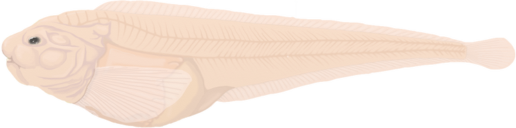
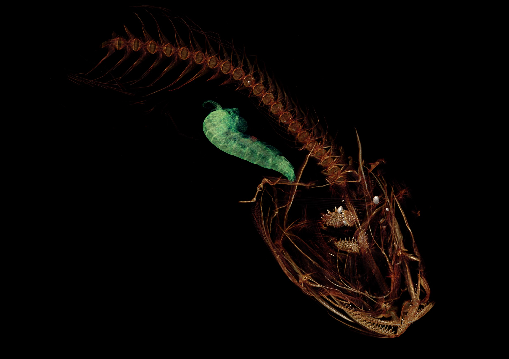

Mariana Snailfish
Plenty of fish deep in the sea


About the Mariana Snailfish
The Mariana Snailfish was discovered only a couple of years ago in the trenches of our oceans about 5 miles, or around 26,135 feet, deep! AND there are still 2 miles below where they were discovered that has yet to be explored, but scientists are reluctant to expect any more discoveries of life any deeper. There is such an intense pressure below the surface, that even finding these twice the size of a cigar fish was a surprise! They are considered to be cute and have a color similar to a light pink!
These snailfish lay eggs that are thought to be big at about 1 centimeter wide and are very abundant within the trenches. Upon discovery, scientists decided to dissect a Mariana Snailfish and found many roly-poly like creatures in their stomachs meaning food appears to be abundant.
Despite these being the deepest fish that we have found in the ocean, human impact is still prevelant at these depths. Plastic particles have been recorded in the crustaceans that are eaten by the Mariana Snailfish at 5 miles deep.
Learn more about the Mariana Snailfish at these sites:
National Geographic - New Fish
National Geographic - How the world’s deepest fish survives bone-crushing pressure